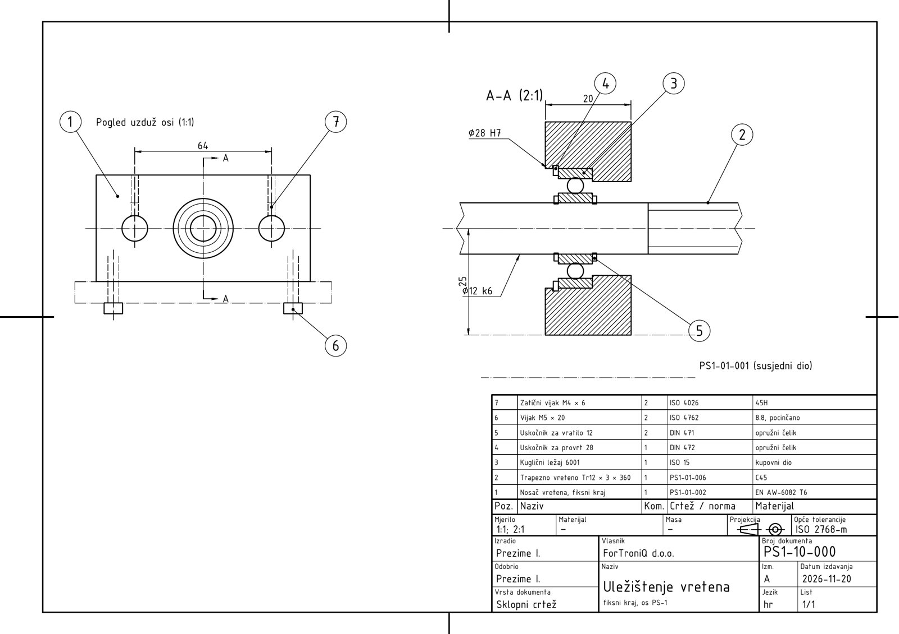
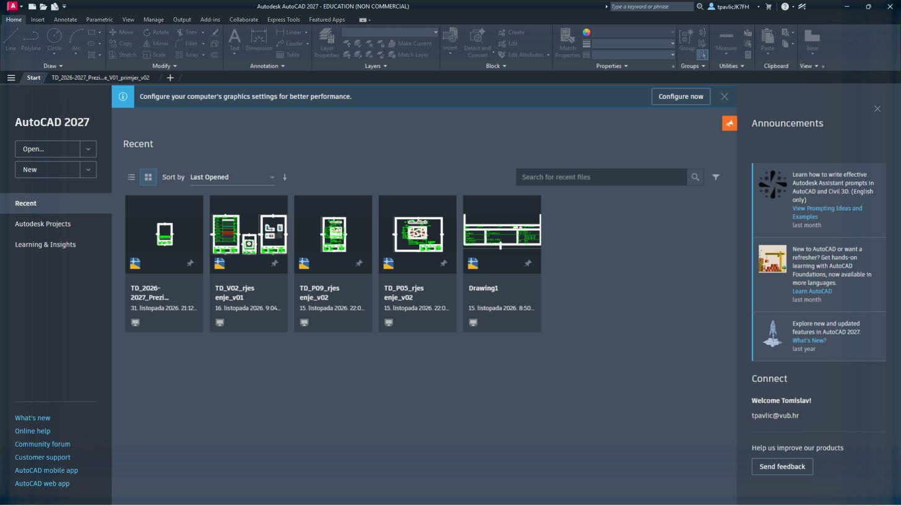
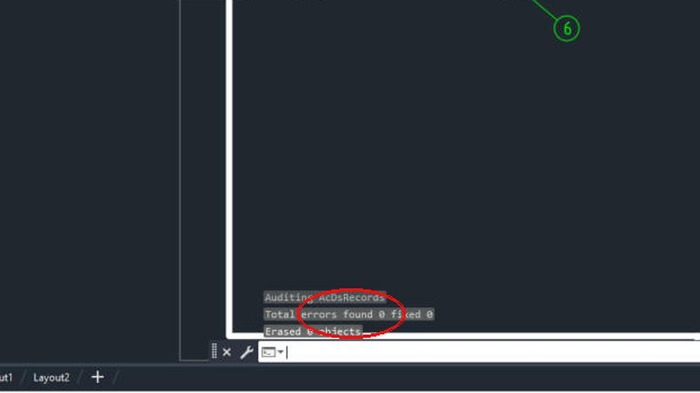
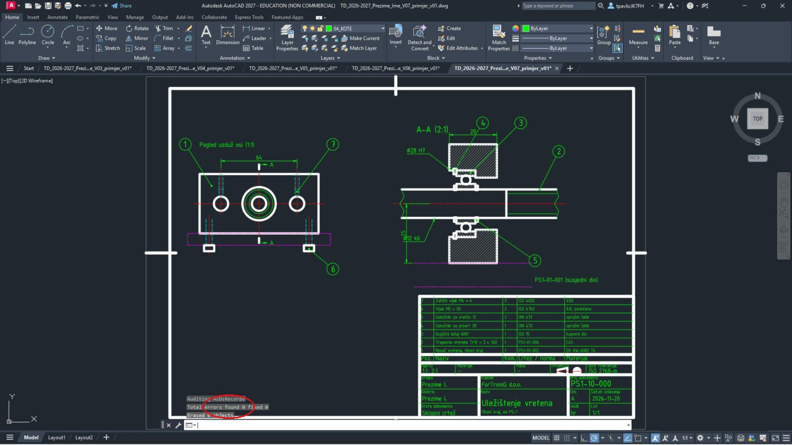
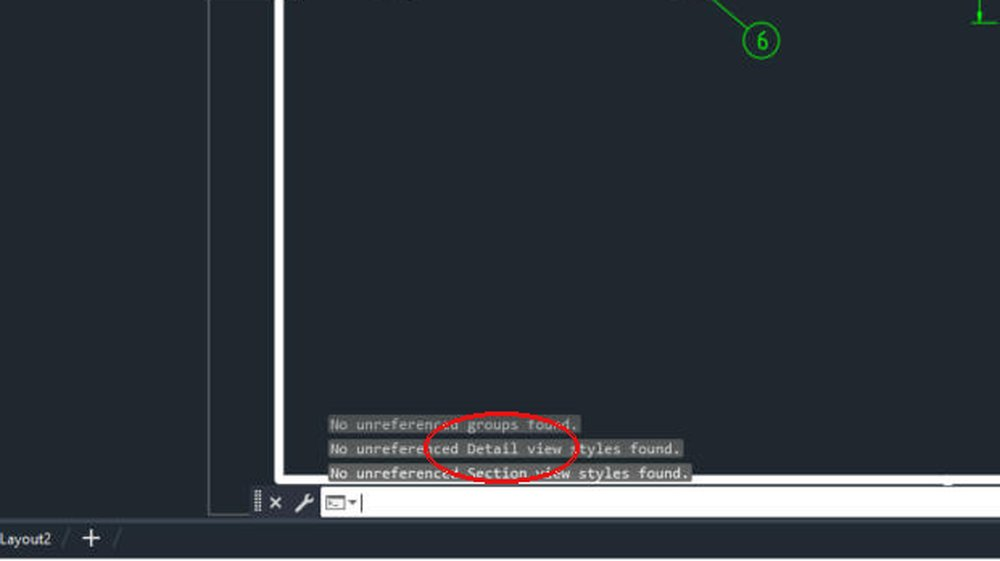
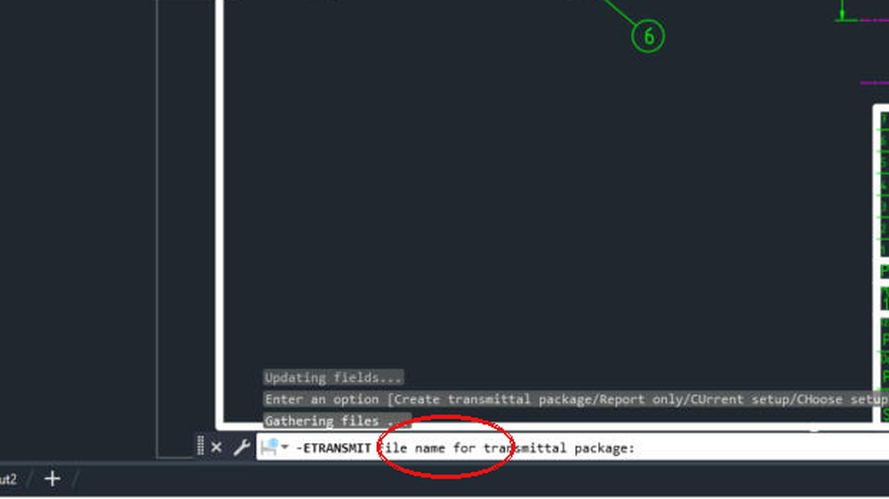
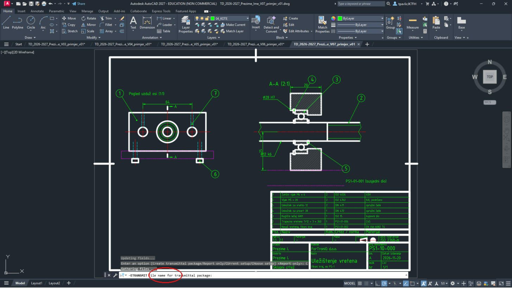
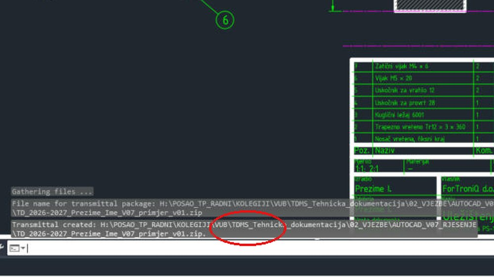
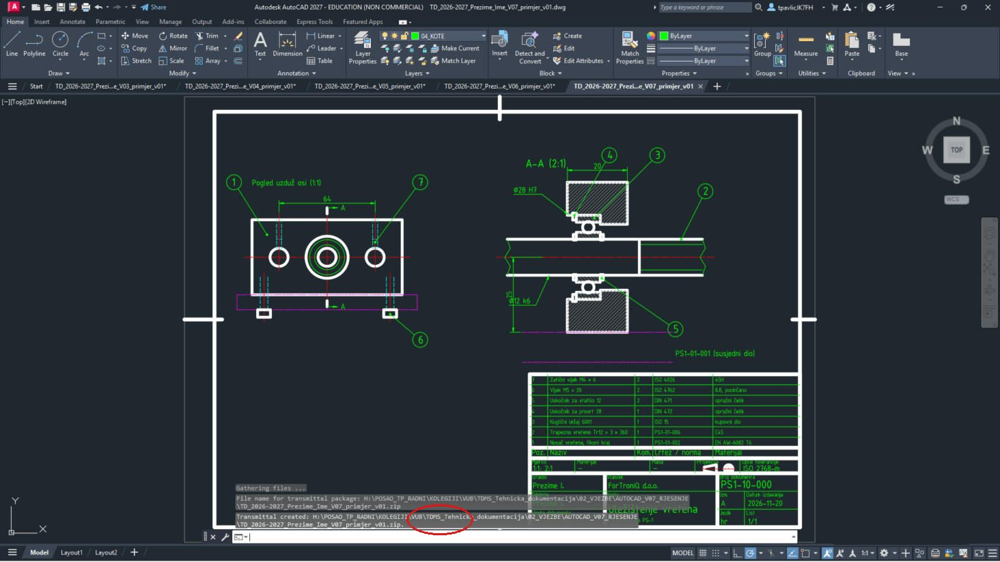

Što ćeš na kraju imati
Ništa novo ne crtaš: svaki crtež projekta provjeriš prema popisu, očistiš naredbama AUDIT i PURGE, ponovno ispišeš u PDF, spakiraš s ETRANSMIT i predaš u mapi s podmapama 01_DWG, 02_PDF, 03_Dokumentacija i 04_Slike. Primjer u snimkama je sklopni crtež iz V7:

Prije početka pročitaj ovo (2 minute)
- „Klikni“ = jedan klik lijevom tipkom miša. „Upiši“ = tipkaj na tipkovnici.
- Nakon svakog upisa pritisni Enter. U okvirima Upiši uz svaki unos piše Enter – svaki put ga stvarno pritisni.
- Koordinate se pišu X,Y – zarez odvaja X i Y, npr.
210,297. Decimalni broj piše se s točkom, npr.148.5. - Točka
0,0je donji lijevi kut lista. X raste udesno, Y raste prema gore. Sve mjere su u milimetrima. - Pogriješio(la) si? Pritisni Esc (prekida naredbu), a Ctrl+Z poništava zadnju radnju.
- Za ovu vježbu treba ti gotova V1 (list s okvirom, zaglavljem, slojevima i stilom TD_ISO). Ako je nemaš, najprije napravi V1. Postupke iz V2 (kopiranje lista, TEXTEDIT, ispis 2:1) ovdje ponavljamo ukratko.
- Uz svaki korak je kvačica gotovo – označi je kad završiš korak, pa ćeš znati gdje si stao(la).
Ako nešto ne ide
- Piše „Unknown command“ – naredba nije bila pokrenuta. Pritisni Esc, pa ponovno klikni alat (ili upiši naredbu) i tek onda brojeve.
- Ne vidiš što si nacrtao(la) – upiši
ZOOMEnterEEnter. - Crte su na krivom mjestu – provjeri dio B (DYNMODE i OSMODE moraju biti 0) i jesi li pisao(la) točku, a ne zarez, u decimalnom broju.
- Ne znaš gdje si stao(la) – sve koordinate u tablicama su točne; nacrtano usporedi sa slikom koraka. Pogrešnu crtu klikni i pritisni Delete.
- Tekst se ne da kliknuti (TEXTEDIT) – približi ga (ZOOM W) i klikni točno na crtu slova.
- Crta je krive boje ili debljine – bila je odabran krivi sloj. Klikni crtu, pa u popisu slojeva na traci odaberi pravi sloj i pritisni Esc.
Sadržaj
AŠto radiš u V8
1
U V8 ne crtaš ništa novo. Svaki svoj crtež projekta (00, 01, 02 …) otvoriš, provjeriš prema popisu, očistiš (
AUDIT, PURGE), ponovno ispišeš u PDF i spakiraš za predaju (ETRANSMIT). Ispravke radiš u DWG-u, a PDF ispisuješ ponovno – PDF nikad ne uređuješ.Snimke u ovoj uputi su na primjeru sklopnog crteža iz V7. Ti isto radiš na svojim crtežima zadatka P##.
2
Na kraju predaješ jednu mapu
TD_2026-2027_Prezime_Ime_P## s četiri podmape:| Mapa | Što je u njoj |
|---|---|
01_DWG | svi tvoji DWG-ovi (ili ZIP iz ETRANSMIT) |
02_PDF | PDF svakog lista, ispis 1:1, monochrome |
03_Dokumentacija | ispunjen predložak dokumentacije (.docx i .pdf) |
04_Slike | snimka provjere sklopa |
BOtvori crtež i prođi popis za samoprovjeru
3
Pokreni AutoCAD i otvori prvi crtež projekta (na zaslonu Start → Open…).

4
Uz otvoren crtež prođi popis redak po redak. Što ne valja, ispravi odmah u crtežu.
| Provjeri | |
|---|---|
| ☐ | Format, okvir 20/10, oznake za centriranje, zaglavlje s svim poljima, znak projekcije |
| ☐ | Glavni pogled nosi najviše informacija; broj pogleda najmanji dovoljan; presjek pokazuje sve dubine |
| ☐ | Debljine crta po pravilima (obris 0,5 · ostalo 0,25); crtkane i središnjice ispravne vrste |
| ☐ | Svaka mjera jednom; nema zatvorenog lanca; funkcijske mjere od baza; Ø i R na pravom pogledu |
| ☐ | Tolerancije na mjerama koje ih trebaju; opće tolerancije upisane; hrapavost na plohama i općenito |
| ☐ | Sklopni crtež: pozicije = redci sastavnice; vijci i podloške po normi; samo gabaritne/priključne/dosjedne mjere |
| ☐ | Provjera sklopa dokumentirana (snimka: poklapanje provrta / 0 interferences) |
| ☐ | Imena datoteka i brojevi crteža po pravilu; PDF 1:1, monochrome, debljine crta vidljive |
| ☐ | Dokumentacija po predlošku: sve odluke obrazložene; AI-alati navedeni |
Zaglavlje svakog crteža: broj crteža, naziv, mjerilo, materijal, masa, ime, datum, indeks izmjene (A za prvu predaju). Sastavnica i popis crteža moraju imati iste brojeve i nazive kao zaglavlja.
CAUDIT – provjera i popravak pogrešaka u datoteci
5
Upiši
AUDIT Enter. Na pitanje Fix any errors detected? upiši Y Enter.Upiši:
AUDIT Enter Y Enter

U naredbenom retku: Total errors found 0 fixed 0. Ako ima pogrešaka, AUDIT ih je popravio – spremi crtež.
AUDIT ne gleda je li crtež tehnički ispravan, nego je li datoteka zdrava (oštećeni objekti, krive reference).
DPURGE – brisanje neiskorištenih slojeva, stilova i blokova
6
Upiši
-PURGE Enter (s crticom – radi u naredbenom retku), zatim A Enter (All), Enter (sva imena, *) i N Enter (ne pitaj za svako ime posebno).Upiši:
-PURGE Enter A Enter (Enter) N Enter
AutoCAD nabraja što je obrisao, a na kraju piše No unreferenced … found – nema više ničeg neiskorištenog.
PURGE briše samo ono što se nigdje ne koristi (npr. prazan sloj ili stil kota bez kota). Nacrtani objekti ostaju. Može i bez crtice:
PURGE otvara prozor s gumbom Purge All.ESpremi i ponovno ispiši PDF
7
Upiši
QSAVE Enter. Zatim Ctrl + P i ispiši svaki list kao u vježbi u kojoj je nastao (Window kutovi lista, Scale prema mjerilu lista, monochrome.ctb).Upiši:
QSAVE Enter

Zadnja provjera: otvori svoj PDF na drugom računalu ili mobitelu – ako nešto nije čitljivo tamo, nije čitljivo ni radionici.
FETRANSMIT – paket svih datoteka crteža
8
Upiši
-ETRANSMIT Enter, zatim C Enter (Create transmittal package).Upiši:
-ETRANSMIT Enter C Enter

AutoCAD skuplja datoteke (Gathering files …) i pita File name for transmittal package.
9
Upiši puni put i ime ZIP-a (npr. u mapu
01_DWG svoje predaje, ime …_P##_DWG.zip) i Enter.

Transmittal created: i put do ZIP-a. U ZIP-u su DWG, popis datoteka (.txt) i postavke ispisa (DWG To PDF.pc3, monochrome.ctb).
Ako se umjesto pitanja u retku otvori prozor za spremanje, samo odaberi mapu i upiši ime. ETRANSMIT je važan kad crtež koristi vanjske reference (XREF) ili posebne fontove – inače bi se na drugom računalu otvorio bez njih.
GMapa predaje i predaja
10
U Windowsima napravi mapu
TD_2026-2027_Prezime_Ime_P## (svoje prezime, ime i broj zadatka) s podmapama 01_DWG, 02_PDF, 03_Dokumentacija i 04_Slike i premjesti datoteke u njih.Dokumentacija po predlošku: naslovnica, popis crteža, opis dijela i sklopa, odluke (tolerancije, hrapavost, materijal – s obrazloženjem), sastavnica, provjera sklopa, popis korištenih AI-alata (što i kako).
11
Cijelu mapu spakiraj u ZIP i predaj u sustavu za predaju u zadaću Projektni zadatak — strojarski dio do 27. 11. u 23:59.
Prije predaje još jednom otvori ZIP i provjeri da su sve četiri podmape unutra.